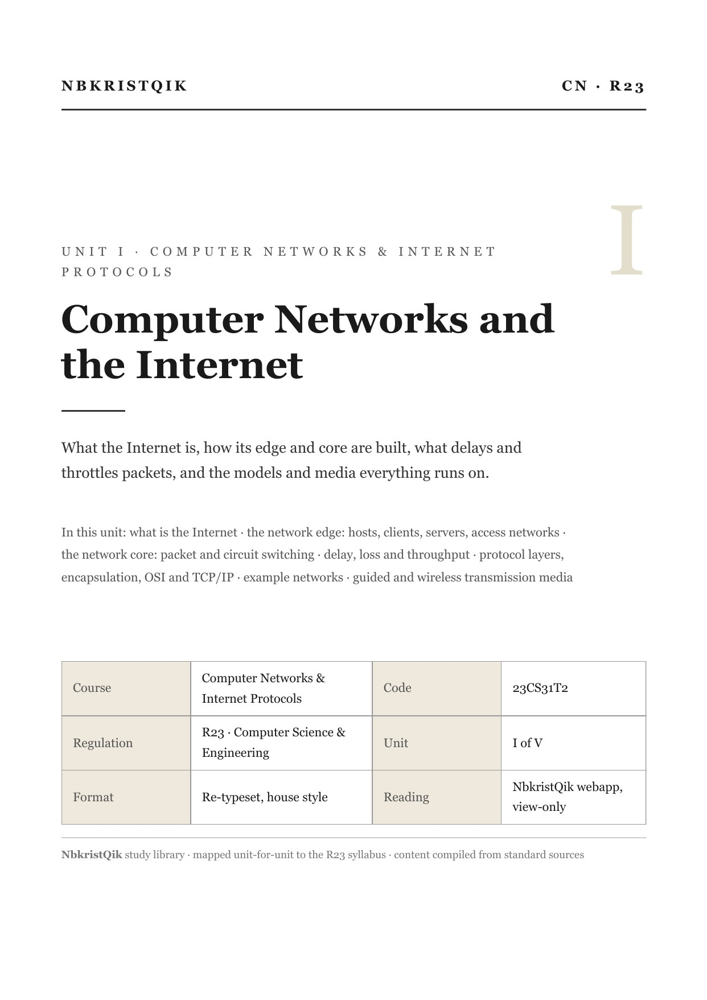
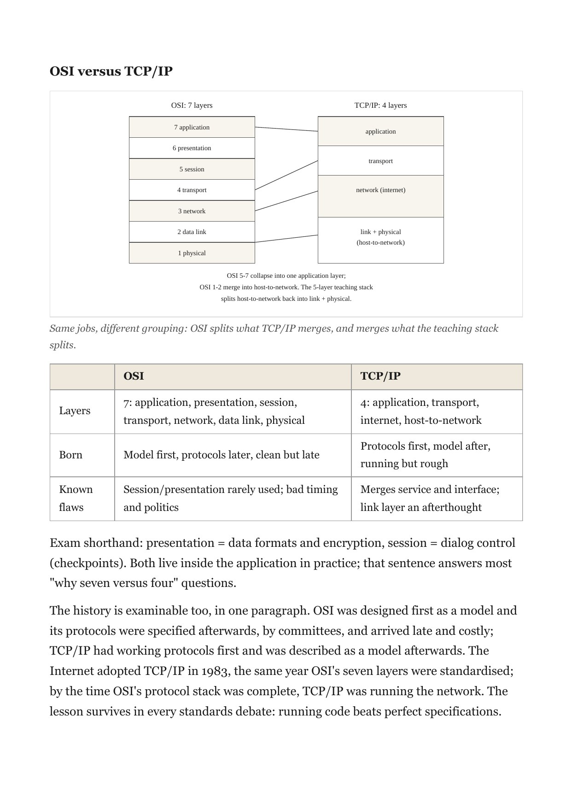
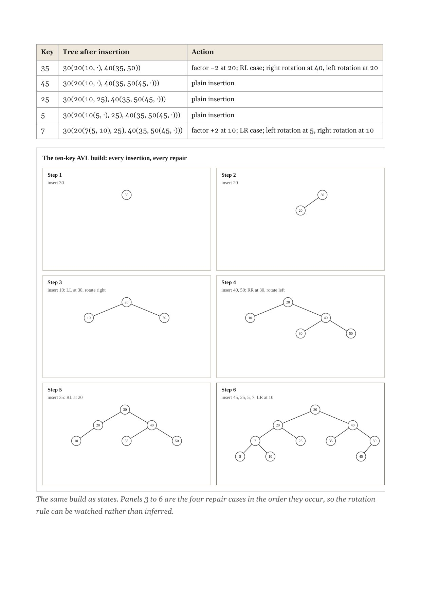

A Telegram bot for NBKRIST students
Your college, in the chat you already have open.
Send a roll number, get attendance and mid marks in seconds. Registered? The daily commands answer in one tap. There is a live leaderboard, a report line that actually replies, and now a library of subjects set page by page.
No install, no new account. Your roll number is the only thing it asks for.
23CS1042| Roll | 23CS1042 |
|---|---|
| Branch | CSE · 3-1 |
| Attended | 139/182 |
| Percentage | 76.37% |
01Between classes
Register once, ask in one tap.
The college portal answers the daily questions in about a minute, when it feels like answering. The bot answers in seconds, in the chat you already have open. Save your roll once, and /attendance, /midmarks and /bunk stop asking for anything at all.
/midmarks| Subject | Type | M1 | M2 | Avg |
|---|---|---|---|---|
| CN | Theory | 18 | 21 | 19.5 |
| ATCD | Theory | 14 | 17 | 15.5 |
Give the low ones some extra time.
/bunkYou can bunk 3 more and stay above 75%.
| Subj | Now | Bunk | Need |
|---|---|---|---|
| CN | 86 | 4 | 0 |
| ATCD | 71 | 0 | 2 |
Bunk is skips you can afford. Need is classes in a row.
Roll number
23CS1042
Save
No password, no email, no onboarding. Edit it whenever you like.
Not registered yet? Send any roll number in the chat and the same answers come back. Registration only removes the typing.
02The leaderboard
A leaderboard that reads like the register.
Rank the class by attendance or by mid marks. Filter by year, branch and section, search by roll, and scroll as far as the class goes. It opens full screen in the webview and moves like the rest of the bot.
Your own row is bracketed in the margin and stamped. The line at 75% is drawn once, across the list.
- Ranked by
- Attendance percentage or mid marks. Switch with one tap.
- Filtered by
- Year, branch, section. Search finds a roll as you type.
- Marked at
- The red 75% line. Below it, the figures print in red.
03The report line
When something breaks, there is a thread.
/report opens a form. Every report gets an id, like QIK-0007, so nothing is a message lost in a chat. Add to the thread while it is open; my reply lands there and in your DM at the same time.
Resolved closes the thread read-only. If it comes back, file it again as a new report.
04The libraryNew · in rollout
The textbook, rebuilt for the phone.
The newest room in the bot. Every subject set again from the official R23 syllabus: the text typeset, the tables rebuilt, 362 diagrams drawn as SVG. Then it is streamed to your phone one page at a time.
There is no PDF to download, because there is no PDF.
- Delivery
- Pages are rendered on the server and sent as images, one at a time. Your phone never assembles a document.
- The mark
- A faint per-reader watermark is baked into the pixels. Hard to see at reading size; it survives a screenshot.
- The doors
- The shelf follows your roll: branch, regulation, semester. In rollout — the shelves are loaded; the doors open semester by semester.


OSI and TCP/IP, with the comparison table.

The banking ER diagram, drawn in one piece.

Six AVL steps on one page.
Two longer notes: how the library opened, and how 51 documents were set from the syllabus up.
05The commands
Everything the menu says.
The whole register. Most of it works the moment you open the bot; the rest asks for one thing only.
| Command | Who | What comes back |
|---|---|---|
| a roll number | anyone | Attendance and mid marks for that roll, no registration needed. |
| /attendance | registered | Your percentage, the classes attended, and the bar. |
| /midmarks | registered | Your marks, subject by subject, both mids and the average. |
| /bunk | registered | The skips you can afford, and the classes you must attend. |
| /register | anyone | Saves your roll once. Edit it whenever you like. |
| /leaderboard | anyone | The live leaderboard, ranked by attendance or mid marks. |
| /report | anyone | An issue id and a thread that actually replies. |
| /library | registered | The shelf for your semester, when your doors open. In rollout. |
| /help | anyone | How all of this works. |
There are no accounts and no passwords anywhere. Telegram knows who you are; the roll number says what you study.
06Notes
From the register.
All notesThe library is opening.
Eleven subjects, 1,248 pages, and not a single PDF. The reading room is built; the doors open semester by semester.
The page is the product.
Why I rebuilt the textbook from the syllabus up, and what changes when the unit of design is a page instead of a file.